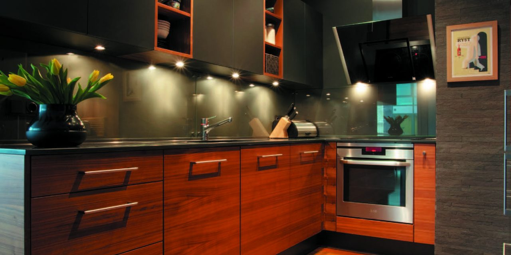

Welcome to Virtuvė
Virtuvė: nuo projekto iki realizacijos - Skaniai Sveikai
2020.10.28 08:06
Follow us
facebook instagram youtube Skaniai ir Sveikai Istorija! Blog’o Istorijos KontaktaiSveikesni sprendimai lėkštėje
Pagrindinis Receptai Salotos Sriubos Žuvis Mėsos patiekalai Kiauliena Paukštiena Jautiena Kita mėsa Su daržovėmis Pusryčių idėjos Padažai ir užtepėlės Desertai Nekepti pyragai Šalti užkandžiai Gėrimai Kepiniai Užkandžiai Blog’o įrašai Pietų Dėžutėse Idėjos Dirbkime kartu Parduotuvė Pagrindinis Receptai Salotos Sriubos Žuvis Mėsos patiekalai Kiauliena Paukštiena Jautiena Kita mėsa Su daržovėmis Pusryčių idėjos Padažai ir užtepėlės Desertai Nekepti pyragai Šalti užkandžiai Gėrimai Kepiniai Užkandžiai Blog’o įrašai Pietų Dėžutėse Idėjos Dirbkime kartu ParduotuvėVirtuvė: nuo projekto iki realizacijos
Written by Aušra Published on 27 spalio, 2020 in Blog'o įrašaiVirtuvė- kol kas didžiausias ir mane labiausiai džiuginantis projektas.
Man teko didelis uždavinys: kaip nedidelėje erdvėje (27m2, virtuvė sujungta su svetaine) įsitekti maisto blogerei, ir padaryti taip, jog visai šeimai būtų patogu.
Kas dar labiau apsunkino visą planavimą, tuo metu laukiausi, tai tik galite įsivaizduoti koks malonumas galvoti ir priimti atsakingus sprendimus siaučiant hormonams ir nuotaikoms besikeičiant kas minutę 🙂 Labai bijojau, kad pagimdžius visi norai pasikeis ir nebesidžiaugsiu virtuve.
Pagaliau viskas baigta, rezultatas net labiau nei džiugina! Esu be galo patenkinta savo gražia ir funkcionalia mažyte virtuve.
Virtuvės sala
Bene didžiausia mano svajonė buvo virtuvės sala. Tiesiog dievinu milžiniškas american style salas su integruotomis kaitlentėmis, kriauklėmis ir įvairiomis išmaniosiomis technologijomis! Deja bute neturime pakankamai vietos įgyvendinti nei šiai, nei kitoms svajonėms, kurios reikalauja labai daug erdvės, tad teko kažkaip suktis ir ieškot realaus sprendimo.
Kadangi šioje erdvėje būtų tilpusi tik sala arba valgomasis stalas, nusprendėme visgi montuoti salą. Su dizainerės pagalba nusibraižėme šį salos variantą, kuris buvo tiesiog tobulai įgyvendintas baldininko 🙂 Suplanavome 4 sėdimas vietas, ir ėmėmės ieškoti pusbario kėdžių.
Didžiausias uždavinys buvo rasti patogias kėdes. Kaip tikriausiai žinote, pusbario kėdės nebūna pats patogiausias reikalas 🙂 Aplankiusi daug baldų salonų, radau šias tobulas kėdes iš Koko Baldai. Sėdi tarsi ant debesies! Kėdės kainavo beveik trečdalį virtuvės baldų kainos, bet buvo verta. Kai nėra valgomojo stalo, itin svarbu patogios pusbario kėdės, kad visa šeima galėtų pietauti komfortiškai.
Kadangi jie neturėjo būtent šios žalios veliūro spalvos, o jos reikėjo prisiderinti prie mūsų sofos spalvos, teko sumokėti papildomai, kad kėdes pagamintų būtent šios spalvos. Kam to reikėjo? Norėjau sujungti virtuvės ir svetainės zonas, kad virtuvė natūraliai įsilietų į svetainės erdvę ir nebūtų tarsi tik darbo, maisto erdvė. Visa kambario zona turi juodus akcentus (šviestuvai, kavos staliukas, virtuvės detalės), o sofa puikiai sužaidžia su kėdėmis- rezultate gavosi daili, spalviškai subalansuota erdvė, kurioje nesijaučiame lyg būtumėme virtuvėje.
Salą išnaudojome kiek tik įmanoma. Virtuvės pusėje įrengėme stalčius, o svetainės pusėje- spintelę, turinčią dvi dureles, kurios atsidaro su paspaudimu (baldininko rekomendacija). Čia laikau įvairius smulkius daiktus, kurių prisireikia darbe.
Stalčius dėjau visur, kur tik įmanoma, nes man jie patogiausi. Išsitraukus stalčių viskas matosi, tuo tarpu spintelėse daiktai dažnai nugrūdami į galą, ir juos tiesiog pamiršti.
Saloje viršutinį, siauresnį stalčių dedikavau prieskoniams. Visada norėjau atskiro prieskonių stalčiaus! Anksčiau juos laikiau spintelėje, kas nebuvo itin patogu.
Kituose stalčiuose laikau birius produktus (miltus, kruopas, sėklas). Kadangi dar liko vietos, ten apgyvendinau ir visus konservuotus produktus.
Taip pat šalia salos įrengėme porą rozečių. Kadangi čia dažnai vyksta fotosesijos, filmavimai, naudoju maisto smulkintuvą ir kitą elektroniką, be jų neapsieičiau. Taip pat labai patogu pasikrauti kompiuterį, kadangi kol kas virtuvės sala yra ne tik gaminimo, valgymo, bet ir mano darbo vieta.
Furnitūra ir baldų gamintojas
Visi stalčiai ir lankstai iš Blum.
Baldininkui net nereikėjo sakyti, kad noriu būtent jų, nes jis tik juos ir tenaudoja. Beje, virtuvę mums gamino per rekomendacijas rastas baldininkas Giedrius iš GL Baldų Gamyba.
Vyrukas kruopštus, pataria, pasiūlo savo idėjų, pasako kas ir kaip yra geriau praktikoje. Bendromis pajėgomis pasirinkome baltą matinę dažytą MDF plokštę. Rankenėlių nenorėjau, tad pasirinkome išfrezuotas rankenas, kurias nudažėme ta pačia balta spalva. Stalviršiai ir virtuvės sienelė- EGGER LMDP (laminuota medžio drožlių plokštė).
Iš pradžių dizainerė mums buvo suplanavusi marmuro stalviršius bei sienelę. Realybėje buvo sunku rasti gražią marmuro imitacijos medžiagą, o akmens masė tiesiog mums buvo per brangi. Projektavimo eigoje pakeitėme dizainerę į Dovilę, kuri išties mums daug padėjo. Pamačius mano vargą su marmuru, pasiūlė medį, ir bendromis pajėgomis išsirinkome šį dailų variantą iš baldininko paletės. Galutiniu rezultatu esu be galo patenkinta, ir visiškai nesigailiu atsisakiusi marmuro!
Iškilo klausimas, kodėl keičiau dizainerę? Pirmąją radau per Instagram’ą, sužavėjo jos darbų pavyzdžių nuotraukos. Rezultate ji mums teisingai neapskaičiavusi suplanavo virtuvės salą iki pat durų, kuri būtų nepalikusi praėjimo. Virtuvės apšvietimą suplanavo taip, jog gaminant būtų kritę šešėliai. Na ir dar pakankamai kitų dalykų, dėl kurių nusprendėm pusę jos darbo perdaryti. Istorijos moralas- dizainerį rinkitės atsakingai!
Apšvietimas
Daug gaminant svarbus geras apšvietimas. Po viršutinėmis spintelėmis įsirengėme integruotą LED apšvietimą, kurį įjungiame jungikliu, suplanuotu prie rozečių ant virtuvinės sienelės. Šalia antresolinių spintelių montavome baltus kryptinius šviestuvus, apšviečiančius gaminimo erdvę. Ir, žinoma, virš virtuvės salos montavome trijų dalių pakabinamą šviestuvą. Jis ne tik apšviečia salą, bet ir yra puikus virtuvės akcentas, jungiantis virtuvės ir svetainės erdves.
Visi mūsų šviestuvai pirkti Ekoliumenas. Kai kurių reikėjo laukti 1.5 mėnesio, bet juos drąsiai galėčiau rekomenduoti- šviestuvai išties puikūs, pasirinkimas platus.
Plautuvės zona ir aplink ją
Šioje vietoje teko priimti sunkų sprendimą. Turėjome rinktis ar norime platesnės darbo zonos, ar daugiau patogumo montuojant plautuvę ne kampe. Deja pastarasis variantas būtų sudaręs daug nepatogumų gaminimui, nes realiai tam būtų nelikę vietos.
Plautuvė akmens masės, TEKA. Su valymu bėdų nėra, jeigu valai reguliariai. Taip pat yra specialūs impregnantai, kad puiki išvaizda išliktų kuo ilgiau. Bėda yra akmens masės jautrumas smūgiams. Viršutinėje spintelėje virš kriauklės turime įmontuotą indų džiovyklą. Kartą kritus dubenėliui, jis atsitrenkė į plautuvės kampą, kurį nuskėlė. Kas juokingiausia, dubenėlis liko sveikas 🙂 Antrą kartą rinkčiausi arba ne akmens masę, arba rinkčiausi atidžiau ir ieškočiau atsparesnio varianto.
Beje, labai norėjau iš apačios klijuojamos plautuvės, bet šitam stalviršiui tokia netiko, tad išsirinkau šią nedidelę plautuvę, montuojamą ant stalviršio.
Maišytuvas taip pat iš TEKA, puikus, gražus, 10 balų.
Plautuvę montavome kampe, šalia šaldytuvo. Negaliu sakyti, jog yra nepatogu, tik šiuo atveju indaplovei buvo vietos tik iš dešinės pusės, nors būtų patogiau iš kairės. Panaudojus indaplovę mėnesį dar nepastebėjau minusų jos buvimui dešinėje pusėje (esam dešiniarankiai).
Indaplovė ELECTROLUX , modelis EES69310L. Rinkdamasi indaplovę turėjau pagrindinį kriterijų- viršutinis stalčius įrankiams. Atlieka savo darbą puikiai, yra patogi, turi daug funkcijų.
Po plautuve montavome ištraukiamą stalčių, kuriame laikome dvi šiukšlių dėžes. Pagaliau labai patogiai rūšiuojame šiukšles! Šios šiukšlių dėžės iš IKEA. Tiesiog tobulai tilpo į stalčių, centimetras į centimetrą! Didelis pliusas yra tas, kad jos turi dangčius- jokio nepageidaujamo kvapo namuose
Prie kairiosios sienos turime įmontuojamą šaldytuvą ELECTROLUX . Modelis ENN3153AOW. Visada geriau laisvai statomas šaldytuvas, bet kaip ir minėjau, nenorėjome to buvimo virtuvėje jausmo sėdėdami svetainės zonoje, tad nusprendėme kad teks įsitekti su mažesniu šaldytuvu. Tas nėra blogai- maisto perkame tiek, kiek reikia, produktai nespėja sugesti ir netenka švaistyt maisto.
Apatinė baldų zona
Apačioje vien tik stalčiai. Šalia plautuvės įrengėme du ištraukiamus cargo stalčius. Vienas- dedikuotas buitinei chemijai, kempinėlėms, šluostėms ir rankšluosčiams. Kad pastarųjų nereikėtų ieškoti kur pakabinti virtuvėje, nusprendėme juos paslėpti.
Kitas- aliejui, įvairiems padažams, konservams ir viskam, kas naudojama dažniausiai, ir ko gali prireikti stovint prie kaitlentės. Šie cargo stalčiai labai pasiteisino, ir jei tik virtuvė būtų didesnė, jų būčiau suplanavus dar daugiau!
Toliau seka standartiniai stalčiai, visi jie BLUM. Džiaugiuosi savo sprendimu nedaryti rankenėlių- tas virtuvei duoda vientisumą ir ne tokį virtuvišką vaizdą.
Girdėjau, jog būtent tokio tipo rankenos nerekomenduojamos, nes į jas prikrenta įvairių nešvarumų. Negalėčiau su tuo sutikti: prikrenta retai ir nedaug, ir bet kokiu atveju tiek tokias, tiek įprastines rankenėles reikia reguliariai valyti, tad šias užskaitau visu 100%.
Viršutinis stalčius po kaitlente dedikuotas įrankiams. Ši vieta jiems yra bene patogiausia! Tik ateityje planuoju pasikeisti įrankių stalčiaus skirtukus: noriu daugiau skyrelių ir peilius susmeigti, o ne tiesiog juos sudėti į skyrelį.
Po šiuo įrankių stalčiumi yra dar vienas paslėptas stalčius 🙂 Ten susidėjau puodų ir keptuvių dangčius, bei į viršutinį stalčių netilpusius įrankius.
Apatiniai stalčiai skirti puodams, keptuvėms, dubenims ir lėkštėms. Patogesnio būdo laikyti puodams už stalčius neradau. Visi tie ištraukiami mechanizmai pasirodė išnaudojantys per daug vietos, o stalčiai yra žymiai talpiau ir gan patogu. Taip pat stalčius išklojau specialiais kilimėliais stalčiams iš IKEA, kad jie nuo puodų nesusibraižytų- visgi dažytas MDF yra gan jautrus smūgiams ir įbrėžimams.
Mūsų indukcinė kaitlentė- ELECTROLUX . Modelis EIV644. Patiko, jog kaitrą galima reguliuoti tiesiog braukiant pirštu, taip pat sujungti dvi zonas į vieną: taip prireikus bus patogu naudotis labai dideliu puodu arba keptuve.
Stalčius po orkaite dedikavau įvairiems biriems produktams, o viršutinįjį, siauresnį stalčių- kepimo reikmenims.
Orkaitė- taip pat ELECTROLUX . Modelis EOC8P31X. Išties specialiai neplanavome pirkti būtent šio gamintojo buitinės technikos. Tiesiog taip gavosi lyginant įvairias prekių charakteristikas, jie turėjo tai, ko mum reikėjo, taip pat jų kainos ir kokybės santykis puikus.
Renkantis orkaitę man prioritetu buvo pirolizės funkcija- maisto likučių sudeginimas ir savaiminis išsivalymas. Taip pat kepimo garuose funkcija, kurią turėjo vos keletas orkaičių. Žinoma ji turi ir integruotus receptus, termometrą ir teleskopinius bėgelius, kurių dėka patogu ištraukti kepinius. Iš esmės savo pasirinkimu labai džiaugiuosi.
Viršutinės spintelės
Spintelės virš orkaitės atsidaro su paspaudimu.
Žemesnioji atsidaro į viršų. Joje prie sienos suplanavome ir jungiklį, jeigu kažkada nuspręstumėme įsigyti mikrobangų krosnelę, nedidelį kavos aparatą ar kažkokį kitą įrenginį, kuriam reikėtų vietos.
Viršutinė spintelė atsidaro į šoną, ten suplanavau lentynėles. Kol kas dar ne visi daiktai atrado savo galutinę vietą, bet kol kas tilpo visi didesni arba šiuo metu rečiau naudojami dalykai.
Antresolinės spintelės. Pagal pradinį planą jų neturėjo būti, buvau suplanavus pailgas spinteles. Visai neplanuotai per virtuvės lubas mums pravedė rekuperacijos vamzdį, tad su baldininku nusprendėme, jog horizontalios spintelės su antresoliniu viršumi ne tik uždengs vamzdį, bet ir bus gerokai praktiškiau: viršuje išties labai daug vietos rečiau naudojamiems daiktams. Ir vėl, labai džiaugiuosi šiuo pasirinkimu, nes daiktų ten telpa labai daug. Taip pat nemėgstu, kai atidarius dureles matosi visos lentynėlės, tad sprendimas spinteles išskirstyti zonomis labai pasiteisino.
Rudosios viršutinės spintelės. Apatinės atsidaro tiesiog pakeliant pirštu į viršų, o viršutinės- nuo paspaudimo. Labai patogus sprendimas.
Virš kriauklės turime indų džiovyklą (nors ir turime indaplovę, išdžiovinančią indus, džiovykla vistiek reikalinga kasdien). Visos kitos spintelės naudojamos įvairiems virtuvės daiktams, kūdikio reikmenims, o spintelė virš kaitlentės dedikuota šluostėms ir visiems kitiems buitiniams rakandams.
Vienintelis minusas- spintelės galėtų būti šiek tiek aukštesnės, nes ne visi daiktai telpa pastatyti vertikaliai. Aukščio būčiau išlošusi jeigu būtumėm siaurinę antresolines spinteles, bet tada jos nebūtų atrodžiusios taip gerai.
Na ir paskutinis dalykas- gartraukis! Pradėkim nuo to, kad aš jų baisiai nemėgstu, ir nemėgstu tų ištraukiamų gartraukių, kurių kraštą reikia pastoviai blizginti. Baldininkas rekomendavo ELICA gartraukius, kurie tiesiog paslepiami spintelėje. Iš apačios jis atrodo štai taip:
Rinkomės baltą, kad susilietų su spintele. Modelis ELICA LANE WH/A/52. Integruotas LED apšvietimas, reguliuojasi garų traukimo intensyvumas. Jis nėra labai tylus, bet nėra ir itin garsus, sakyčiau toks viduriukas. Man tiesiog tobula kai jo nereikia kaskart vos prilietus blizginti.
Na ir pabaigai: visiem linkiu turėti tokią virtuvę, iš kurios nesinorėtų išeiti! Jausmas nepakartojamas 🙂
Aušra
Dalintis:
Click to share on Twitter (Opens in new window) Click to share on Facebook (Opens in new window)Susiję straipsniai
Tags
maisto tinklaraštininkės virtuvė mano svajonių virtuvė moderni virtuvė virtuvė virtuvė pagal individualų užsakymą virtuvė su pusbalio kėdėmis virtuvė su sala virtuvė sujungta su svetaine virtuvės baldai Vilniuje Tweet Share Pin It PrintAušra
Subscribe to our Newsletter
Traškios bulvės su silke2 komentarai
Leave a Comment Cancel
Aušra I Tinklaraščio autorė
Mėgstantiems skaniai pavalgyt sveikas gyvenimo būdas ir skanus maistas dažnai skamba kaip antonimai. Savo bloge noriu pasidalinti idėjomis ir parodyti, jog sveikas maistas gali būti ir skanus!
Gaukite naujausius receptus tiesiai į savo el. pašto dėžutę
Metainformacija
Prisijungti Entries feed Comments feed WordPress.orgArchyvai
Archyvai Pasirinkite mėnesį 2020 m. spalio mėn. 2020 m. rugsėjo mėn. 2020 m. rugpjūčio mėn. 2020 m. liepos mėn. 2020 m. birželio mėn. 2020 m. gegužės mėn. 2020 m. balandžio mėn. 2020 m. kovo mėn. 2020 m. vasario mėn. 2020 m. sausio mėn. 2019 m. gruodžio mėn. 2019 m. lapkričio mėn. 2019 m. spalio mėn. 2019 m. rugsėjo mėn. 2019 m. rugpjūčio mėn. 2019 m. liepos mėn. 2019 m. birželio mėn. 2019 m. gegužės mėn. 2019 m. balandžio mėn. 2019 m. kovo mėn. 2019 m. vasario mėn. 2019 m. sausio mėn. 2018 m. gruodžio mėn. 2018 m. lapkričio mėn. 2018 m. spalio mėn. 2018 m. rugsėjo mėn. 2018 m. rugpjūčio mėn. 2018 m. liepos mėn. 2018 m. birželio mėn. 2018 m. gegužės mėn. 2018 m. balandžio mėn. 2018 m. kovo mėn. 2018 m. vasario mėn. 2018 m. sausio mėn. 2017 m. gruodžio mėn. 2017 m. lapkričio mėn. 2017 m. spalio mėn. 2017 m. rugsėjo mėn. 2017 m. rugpjūčio mėn. 2017 m. liepos mėn. 2017 m. birželio mėn. 2017 m. gegužės mėn. 2017 m. balandžio mėn. 2017 m. kovo mėn. 2017 m. vasario mėn. 2017 m. sausio mėn. 2016 m. gruodžio mėn. 2016 m. lapkričio mėn. 2016 m. spalio mėn. 2016 m. rugsėjo mėn.